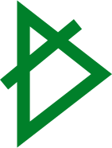
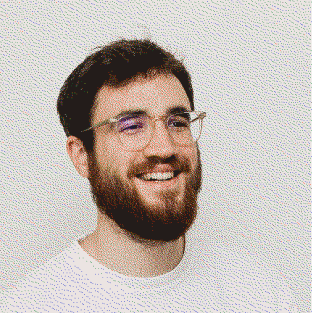

<link rel="stylesheet" href="css/master.css">

<header>
  <nav>
    <a id="blog" href="blog.html">blog</a>
    <a id="a-propos" href="apropos.html">a propos</a>
    <a id="archive" href="archive.html">archive</a>
    <a id="logo" href="now.html">
      
    </a>
  </nav>
</header>

<section>
  <div class="pictureofme">
    
  </div>

  <div class="header">
    <h1>Modern living in symbiosis with our environment.</h1>
  </div>
  <div class="text">
    <p>My aim is to build a bridge between the physical and the digital, the speculative and the tangible—while creating better solutions for our environment and respecting our planet’s boundaries.
Shaping the physical and virtual worlds we move in is a political act and entails responsibility, not only towards society, but also the planet and its non-human inhabitants.
I want to be part of a team that acts on this responsibility and aims to contribute to a more sustainable, more socially equal society.</p>
  </div>
</section>

<section>
  <h1>record</h1>
  <div class="recordtext">
    <p>Iata Namur / Graphic Design
ESA Saint-Luc Liège / Industrial Design
Design School of Kolding / Design for Planet</p>
  </div>
  <div class="text">
    <p>My project have been presented in different exhibition. During the 3daysofdesign where I won the 1st price of the design speech organised by DDcated. And during the exhibition “You are here” presenting projects of the 2022 promotion to the public.</p>
  </div>
</section>

<section>
  <h1>video</h1>
  <div class="video">
    <iframe width="1278" height="501" src="https://www.youtube.com/embed/iUca_6qfQSw" title="Here is the story of &quot;Sphēra&quot;." frameborder="0" allow="accelerometer; autoplay; clipboard-write; encrypted-media; gyroscope; picture-in-picture; web-share" allowfullscreen></iframe>
  </div>
  <div class="text">
    <p>Dive into one of my latest and biggest project “Shēra”.
In this project I explore the possibilities of Open Source and self made objects. Using concept such as: Upcycling, Personnalisation, FabLab...
It plays between digital and physical, between local and global.</p>
  </div>
</section>

<footer>
  <a id="mail" href="mailto:aymericdelecaut@outlook.com">email</a>
  <a id="phone" href="tel:+4591199579">+45 91 19 95 79</a>
  <a id="insta" href="https://www.instagram.com/and_sign/">@and_sign</a>
</footer>
